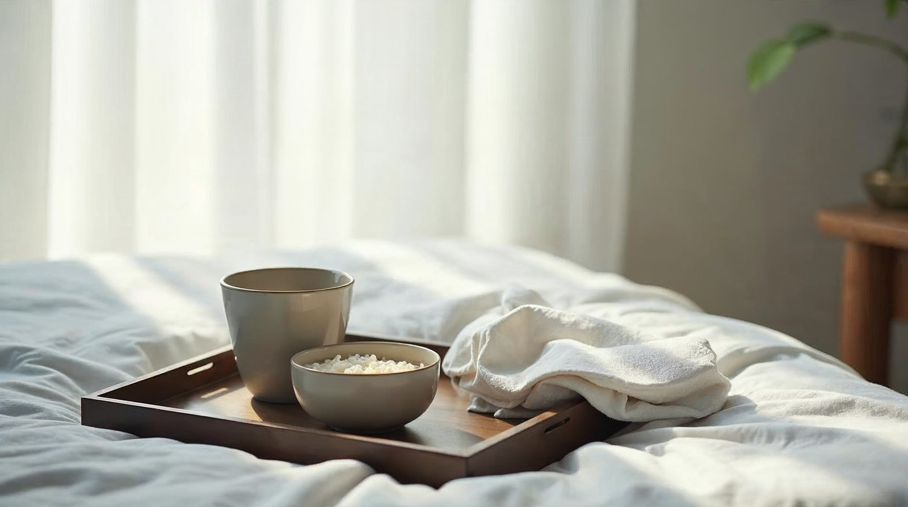
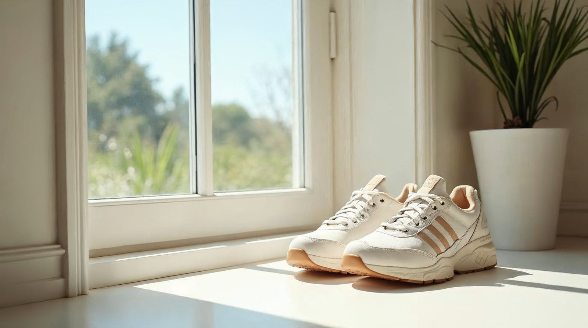
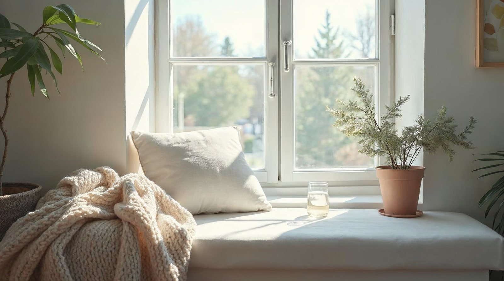
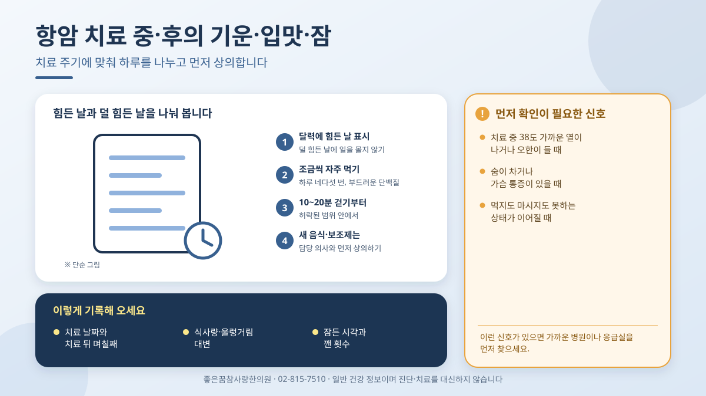

이종호 한의사 감수좋은꿈참사랑한의원 대표원장 (한의사 면허번호 19769)발행 2026-11-26 · 수정 2026-11-26
이 글의 차례
항암 주사를 맞고 온 다음 날, 부엌에서 밥 짓는 냄새만 맡아도 속이 울렁거립니다. 며칠 지나 겨우 입맛이 돌아올 즈음이면 다음 치료 날짜가 다가옵니다. 기운이 없어 소파에 앉아 있다가도 '이렇게 누워만 있어도 되나' 하는 마음에 다시 일어나 집안일을 붙잡습니다.
진료실에서는 병원 치료는 잘 받고 있는데 하루하루 지내기가 너무 힘들다는 말씀, 치료가 끝났다는데 몸이 예전 같지 않다는 말씀을 조심스럽게 꺼내시는 분이 있습니다. 그 말 속에 담긴 긴 시간을 생각하면, 저는 먼저 그동안 정말 애쓰셨다는 말씀을 드리게 됩니다.
먼저 분명히 말씀드리고 싶은 것이 있습니다. 암의 치료는 수술, 항암 치료, 방사선 치료처럼 주치의(종양내과 등 담당 전문의)가 이끄는 치료가 중심입니다. 한의원은 암을 치료하는 곳이 아니며, 그 치료를 대신하거나 줄이자고 권하지 않습니다.
그렇다면 한의원은 어떤 자리일까요. 치료를 받는 동안, 그리고 치료를 마친 뒤 일상을 살아 내는 동안 생기는 기운의 저하, 입맛과 소화, 잠, 몸의 긴장 같은 이야기를 담당 의사와 상의한 범위 안에서 함께 듣고 살피는 자리입니다. 이 글은 그 자리를 어떻게 이용하면 좋은지 정리한 안내입니다.
왜 치료 중에는 기운과 입맛이 흔들릴까요
항암 치료는 빠르게 자라는 세포를 겨냥합니다. 그 과정에서 같은 성질을 가진 정상 세포, 예를 들어 입안과 위장의 점막, 머리카락, 피를 만드는 골수도 영향을 받습니다. 그래서 입맛이 떨어지고, 속이 울렁거리고, 입안이 헐고, 머리카락이 빠지고, 쉽게 지치는 일이 생깁니다.
이런 변화는 치료의 종류와 용량, 사람마다 크게 다릅니다. 같은 약을 맞아도 어떤 분은 입맛이 먼저 흔들리고, 어떤 분은 손발 저림이나 피로가 먼저 옵니다. 그래서 남의 경험과 비교하기보다 내 몸의 흐름을 보는 것이 중요합니다.
치료를 마친 뒤에도 피로가 몇 달, 길게는 그 이상 이어지는 분이 있습니다. 암 관련 피로라고 부르는데, 쉬어도 쉽게 풀리지 않는다는 점에서 보통의 피곤과 다릅니다. 잠이 얕아지고, 집중이 흐려지고, 마음이 쉽게 가라앉는 것도 흔히 함께 옵니다.
마음의 무게도 큽니다. 다음 검사 결과를 기다리는 시간, 재발하지 않을까 하는 걱정, 예전처럼 일하고 사람을 만날 수 있을까 하는 막막함이 몸의 피로와 얽힙니다. 몸과 마음을 따로 떼어 보기 어려운 시기입니다.
한의학에서는 오래 앓거나 큰 치료를 거친 몸을 기(氣)와 혈(血), 진액(津液)이 함께 소모된 모습으로 보아 왔습니다. 다만 이것은 일상의 불편을 살피는 시선일 뿐, 암 자체를 다루는 방법이 아니라는 점을 다시 말씀드립니다.
병원 치료와 한의원은 어떻게 나눠지나요
암의 진단, 치료 방법의 결정, 치료 중의 검사와 약 조절, 부작용에 대한 처치는 모두 담당 의사의 영역입니다. 치료 중 몸의 변화는 치료 병원과 먼저 나누는 것이 순서입니다.
한의원은 그 바깥에서, 담당 의사가 괜찮다고 한 범위 안에서 일상의 불편을 함께 듣는 쪽에 있습니다. 예를 들어 치료 사이사이 입맛과 소화를 어떻게 챙길지, 잠의 리듬을 어떻게 지킬지, 굳은 어깨와 허리를 어떻게 풀지 같은 이야기입니다.
인터넷이나 주변에서 '암에 좋다'는 음식이나 보조제, 민간요법을 권유받는 일이 많습니다. 그중에는 항암제와 부딪치거나 간과 콩팥에 부담을 주는 것도 있을 수 있습니다. 새로 드시려는 것이 있다면 담당 의사와 먼저 상의하시길 권하고, 한의원에서도 그 원칙을 함께 지킵니다.

예를 들면 이런 모습입니다
실제 어느 분의 사연이 아니라, 진료실에서 자주 보는 모습을 바탕으로 그려 본 장면입니다.
예를 들어 항암 치료를 받으며 직장을 이어 가는 분이라면, 치료 뒤 며칠은 기운이 바닥이었다가 다음 치료 전에 겨우 회복하는 흐름을 말씀하십니다. 이럴 때는 치료 주기에 맞춰 힘든 날과 덜 힘든 날을 미리 달력에 표시하고, 일과 쉼을 나누는 계획을 함께 세웁니다.
치료를 마치고 일상으로 돌아온 분이라면, 주변에서는 다 끝났다고 축하하는데 정작 본인은 몸이 무겁고 마음이 불안합니다. 치료가 끝난 뒤의 피로와 불안도 흔한 과정이라는 것을 먼저 말씀드리고, 하루 활동량을 천천히 늘려 가는 방법을 함께 정합니다.
가족을 돌보는 보호자라면, 환자 곁을 지키느라 본인의 잠과 식사가 무너진 채로 지내는 경우가 많습니다. 돌보는 사람이 먼저 지치지 않도록 보호자의 몸도 함께 살피는 것을 권합니다.
스스로 살펴보는 질문
아래 질문으로 지금 일상에서 무엇이 가장 힘든지 정리해 보세요. 진단을 내리는 표가 아니라, 담당 의사와 한의원 모두에게 상태를 말로 옮기기 위한 정리표입니다.
- 치료 주기 가운데 가장 힘든 날은 치료 뒤 며칠째인가
- 하루 기운을 평소를 100으로 하면 몇 정도인가
- 입맛, 울렁거림, 입안 헐림, 대변 가운데 무엇이 가장 불편한가
- 밤에 몇 번 깨고, 깨는 이유는 무엇인가
- 손발 저림, 붓기, 몸의 굳음이 있는가
- 걱정이나 불안 때문에 하루가 흔들리는 날이 있는가
가장 힘든 것 하나를 골라 두시면 좋습니다. 그 하나를 담당 의사에게 먼저 말씀하시고, 그다음 한의원에서도 그 이야기부터 시작하면 두 곳의 진료가 같은 방향을 볼 수 있습니다.
치료 중에 흔히 겪는 일상의 어려움
입맛과 소화는 가장 흔한 어려움입니다. 냄새에 예민해지고, 맛이 쓰거나 쇠맛이 나고, 조금만 먹어도 배가 부릅니다. 이럴 때는 정해진 끼니보다 먹을 수 있을 때 조금씩 먹는 것, 따뜻한 음식이 힘들면 미지근하거나 차게 식힌 음식이 덜 부담스러울 수 있다는 것을 알아 두시면 좋습니다.
잠도 자주 흔들립니다. 약의 영향, 낮에 누워 있는 시간, 걱정이 겹쳐 밤잠이 얕아집니다. 낮잠을 길게 자면 밤잠이 더 얕아지므로, 낮에 눕더라도 짧게 나눠 쉬는 편을 권합니다.
몸이 굳는 것도 흔합니다. 오래 누워 지내거나 수술 뒤 한쪽 팔을 덜 쓰다 보면 어깨와 목, 허리가 굳습니다. 담당 의사나 재활 쪽에서 허락한 범위 안에서 가볍게 몸을 움직이는 것이 도움이 될 수 있습니다.

치료를 마친 뒤의 일상은 어떻게 되돌리나요
치료가 끝나는 날은 기쁘지만, 그다음 날부터 어떻게 지내야 할지 막막하다는 분이 많습니다. 병원에 다니던 일정이 줄고, 주변의 관심도 줄어들면서 오히려 혼자 남겨진 느낌을 받기도 합니다.
이 시기에는 정기 검사 일정을 지키는 것이 가장 앞에 있습니다. 그 일정을 달력에 먼저 적어 두고, 그 사이의 하루를 천천히 채워 가는 방식을 권합니다. 일과 사회생활로 돌아가는 속도도 담당 의사와 상의해 한 번에 되돌리기보다 단계를 나눠 정하면 덜 지칩니다.
피로가 오래 이어진다면 그것은 의지의 문제가 아니라 큰 치료를 거친 몸의 자연스러운 반응일 수 있습니다. 그래도 빈혈, 갑상선 기능, 우울감처럼 다른 원인이 겹쳐 있을 수 있어 정기 검사 때 피로에 대해서도 꼭 말씀하시길 권합니다.
다시 아플까 하는 걱정이 검사 날짜가 다가올수록 커지는 분도 많습니다. 그런 마음이 드는 것은 당연한 일이고, 그 걱정을 나눌 수 있는 자리를 만들어 두는 것만으로도 잠과 입맛이 덜 흔들리는 경우가 있습니다.
일상을 되찾는 과정에서 잠과 식사, 가벼운 움직임의 리듬을 지키는 일은 작아 보여도 하루의 바탕이 됩니다. 한의원에서는 그 바탕을 담당 의사의 지침 안에서 함께 다져 가는 쪽을 돕습니다.
먼저 이렇게 여쭙니다
처음 오신 분이든 다시 오신 분이든 저는 먼저 양손을 올려 달라고 말씀드립니다. 맥부터 짚으며 어떤 암으로 어떤 치료를 받으셨는지, 지금은 어느 단계인지, 주치의가 일상에서 주의하라고 한 것이 무엇인지를 여쭙습니다.
혈액 검사에서 백혈구나 혈소판이 낮다는 말을 들으셨다면 꼭 알려 주세요. 침 같은 진료를 정할 때 중요한 정보입니다.
드시는 약은 모두 알려 주세요. 항암제, 호르몬 치료제, 진통제, 메스꺼움을 줄이는 약, 수면제, 그리고 드시는 건강식품까지 함께 보아야 합니다. 약 봉투나 처방전을 그대로 가져오셔도 됩니다.
그다음 하루의 모양을 듣습니다. 기운이 가장 떨어지는 시각, 입맛과 대변, 잠, 몸이 굳는 자리를 차례로 여쭙고, 혀와 얼굴빛, 손발의 온도도 함께 봅니다.
일상에서 먼저 해 볼 수 있는 것
치료 중의 일상은 담당 의사와 영양·간호 상담에서 들은 안내가 가장 앞에 있습니다. 그 안내 안에서 해 볼 수 있는 작은 약속들을 정리해 보았습니다.
- 치료 주기에 맞춰 힘든 날과 덜 힘든 날을 달력에 표시하고, 덜 힘든 날에 일을 몰지 않습니다
- 먹을 수 있을 때 조금씩, 하루 네다섯 번으로 나눠 먹습니다
- 매끼 두부, 계란, 생선처럼 부드러운 단백질을 조금씩 챙깁니다
- 허락된 범위 안에서 하루 10~20분 걷기부터 시작합니다
- 일어나는 시각을 고정하고, 낮에는 짧게 나눠 쉽니다
- 새로 드시려는 음식이나 보조제는 담당 의사와 먼저 상의합니다
걷기는 피로를 오히려 덜어 주는 경우가 많다고 알려져 있습니다. 다만 혈액 수치가 낮은 시기나 몸이 크게 지친 날에는 쉬는 쪽이 먼저입니다. 다음 날의 몸을 기준으로 양을 정하세요.
마음을 털어놓을 자리를 하나 만들어 두시면 좋습니다. 가족, 가까운 친구, 치료 병원의 상담 창구, 환우 모임처럼 편한 곳이면 됩니다. 걱정을 혼자 안고 있으면 잠과 입맛이 함께 흔들리기 쉽습니다. 힘든 마음을 말로 꺼내는 것도 몸을 돌보는 일의 하나라고 생각해 주셨으면 합니다. 필요하면 치료 병원에 마음 상담을 연결해 달라고 여쭤보셔도 됩니다.

한의원에서 함께 살필 수 있는 경우
암의 치료는 주치의의 몫입니다. 한의원은 주치의와 상의한 범위 안에서 일상 쪽을 함께 살피며, 이런 경우에 도움을 드릴 수 있는지 진찰 뒤 함께 정합니다.
- 치료를 이어 가면서 입맛, 소화, 잠의 리듬을 함께 살피고 싶은 경우
- 치료를 마친 뒤 피로와 몸의 굳음이 오래 이어지는 경우
- 오래 누워 지내거나 수술 뒤 어깨·목·허리의 긴장이 쌓인 경우
- 치료 중 일상에서 궁금한 점을 담당 의사에게 어떻게 여쭐지 정리가 필요한 경우
진찰을 마친 뒤에는 침, 생활 약속처럼 함께 할 수 있는 것을 정합니다. 혈액 수치, 수술 부위, 방사선을 받은 자리, 주사 관 위치, 감각이 둔해진 곳을 확인하고 피할 곳은 피합니다. 한약도 침도 주치의에게 알리고 상의한 뒤 정합니다.
어떤 방법이든 결과를 미리 약속드리기보다, 다음 진료에서 일상이 어땠는지 함께 보며 조정합니다.
이렇게 기록해 오시면 상담이 쉬워집니다
치료 중의 몸은 주기에 따라 크게 오르내립니다. 기록이 있으면 담당 의사와 한의원 모두 그 흐름을 함께 볼 수 있습니다. 부담 없는 만큼만 적어 와 주세요.
- 치료 날짜와 치료 뒤 며칠째인지
- 오늘의 기운(평소를 100으로 했을 때 몇)
- 식사량과 울렁거림, 대변
- 잠든 시각, 깬 횟수
- 걷거나 움직인 시간과 다음 날 몸의 느낌
- 담당 의사에게서 새로 들은 내용이나 바뀐 약
기록이 부담이라면 치료 날짜와 기운 숫자 두 칸만 적으셔도 충분합니다. 가족이 대신 적어 주셔도 괜찮습니다. 다음에 오시면 그 숫자의 흐름부터 함께 보겠습니다.
긴 치료의 시간을 지나오고 계신 분께 일상의 작은 편안함은 결코 사소하지 않습니다. 담당 의사의 치료를 중심에 두고, 그 곁에서 하루를 조금 덜 힘들게 보내는 방법을 함께 찾아보겠습니다.
이런 증상은 먼저 확인이 필요합니다
- 항암 치료 중 38도 이상 열이 나거나 오한이 드는 경우
- 숨이 차거나 가슴 통증이 있는 경우, 먹지도 마시지도 못하는 상태가 이어지는 경우
이런 신호가 있으면 한의원보다 가까운 병원이나 응급실을 먼저 찾으세요.
함께 읽으면 좋은 글
- 충분히 쉬어도 몸이 늘 피곤한 만성피로는 어떤 점을 살펴보나요?
- 한약 상담을 받을 때 무엇을 알려 주면 좋을까요?
- 기분이 2주 넘게 가라앉고 잠·입맛·흥미가 떨어질 때는 어떻게 살피나요?
- 침 치료를 처음 받기 전에 무엇을 알려 주면 되나요?

여쭙는 것
- 처음 오신 분이든 다시 오신 분이든 저는 먼저 양손을 올려 달라고 말씀드립니다.
- 맥부터 짚으며 어떤 암으로 어떤 치료를 받으셨는지, 지금은 어느 단계인지, 주치의가…
- 혈액 검사에서 백혈구나 혈소판이 낮다는 말을 들으셨다면 꼭 알려 주세요.
생활에서 해 볼 것
- 치료 주기에 맞춰 힘든 날과 덜 힘든 날을 달력에 표시하고, 덜 힘든 날에 일을 몰…
- 먹을 수 있을 때 조금씩, 하루 네다섯 번으로 나눠 먹습니다
- 매끼 두부, 계란, 생선처럼 부드러운 단백질을 조금씩 챙깁니다
한의원에서 함께 살필 것
- 치료를 이어 가면서 입맛, 소화, 잠의 리듬을 함께 살피고 싶은 경우
- 치료를 마친 뒤 피로와 몸의 굳음이 오래 이어지는 경우
- 오래 누워 지내거나 수술 뒤 어깨·목·허리의 긴장이 쌓인 경우
먼저 확인이 필요한 신호
- 항암 치료 중 38도 이상 열이 나거나 오한이 드는 경우
- 숨이 차거나 가슴 통증이 있는 경우, 먹지도 마시지도 못하는 상태가 이어지는 경우
한눈에 보는 표
| 구분 | 핵심 |
|---|---|
| 생활에서 해 볼 것 | 치료 주기에 맞춰 힘든 날과 덜 힘든 날을 달력에 표시하고, 덜 힘든 날에 일을 몰지 않습니다 먹을 수 있을 때 조금씩, 하루 네다섯 번으로 나눠 먹습니다 |
| 한의원에서 함께 살필 것 | 치료를 이어 가면서 입맛, 소화, 잠의 리듬을 함께 살피고 싶은 경우 치료를 마친 뒤 피로와 몸의 굳음이 오래 이어지는 경우 |
| 먼저 확인이 필요한 신호 | 항암 치료 중 38도 이상 열이 나거나 오한이 드는 경우 숨이 차거나 가슴 통증이 있는 경우, 먹지도 마시지도 못하는 상태가 이어지는 경우 |
자주 묻는 질문
한의원에서 암을 치료할 수 있나요?
아닙니다. 암의 치료는 주치의가 이끄는 수술, 항암, 방사선 치료가 중심입니다. 한의원은 담당 의사와 상의한 범위 안에서 기운, 입맛, 잠, 몸의 긴장처럼 일상의 불편을 함께 살피는 자리입니다.
항암 치료 중에 한약을 먹어도 되나요?
주치의에게 먼저 알리고 상의한 뒤에 정하는 것을 원칙으로 삼습니다. 항암제와 다른 약과의 관계, 간과 콩팥의 상태, 다음 검사 일정을 함께 보아야 하기 때문입니다. 필요하면 주치의께 여쭤볼 내용을 함께 정리해 드립니다.
치료 중에 침을 맞아도 괜찮을까요?
항암 치료 중이라면 침도 주치의에게 먼저 알리고 상의해 주세요. 그다음 혈액 수치, 수술 부위, 방사선을 받은 자리, 주사 관 위치를 확인한 뒤 정합니다. 백혈구나 혈소판이 낮은 시기에는 피하는 쪽으로 봅니다. 최근 혈액 검사 결과를 가져와 주시면 함께 확인합니다.
주변에서 좋다는 음식이나 건강식품을 자꾸 권해요.
새로 드시려는 것이 있다면 담당 의사와 먼저 상의하시길 권합니다. 일부는 치료 약과 부딪치거나 간에 부담을 줄 수 있습니다. 평소 드시는 따뜻하고 부드러운 식사를 조금씩 자주 챙기는 것이 기본입니다.
보호자인데 저도 너무 지쳐요.
돌보는 분이 먼저 지치는 일이 많습니다. 하루 중 짧게라도 돌봄을 나눌 시간을 정하고, 보호자 본인의 잠과 식사도 챙기셨으면 합니다. 보호자의 몸도 진료실에서 함께 살필 수 있습니다.
좋은꿈참사랑한의원은 재진 때 지난번 이야기부터 이어서 여쭙니다. 진료시간과 예약은 오시는 길에서 확인하세요.
어디서 상담받을 수 있나요?
좋은꿈참사랑한의원은 서울 동작구 만양로2길 2 신성빌딩 3층·5층(서울 동작구 상도동, 7호선 상도역 3번 출구 근처)에 있습니다. 한의사 3명(이종호 대표원장, 조영기 수석진료원장, 정원영 진료원장)이 진료합니다. 진료시간은 평일 09:30~20:00(점심 13:00~14:00), 토·일·공휴일 09:30~15:00이며, 방문 전 전화로 확인을 권합니다. 예약은 네이버 예약, 카카오톡 상담, 전화 02-815-7510로 받습니다.
이 글은 일반적인 건강 정보이며 개인의 진단이나 치료를 대신하지 않습니다. 증상이 있거나 복용 중인 약이 있다면 진료를 통해 확인하세요. 치료 효과는 개인마다 다를 수 있습니다.
작성 기준: 일반적으로 알려져 있는 건강 정보를 참고해 정리했습니다(대표원장 감수). 증상 기록은 1~2주 동안 하루 1회, 비슷한 시간에 적어 오시면 지난 상태와 비교하기 쉽습니다.